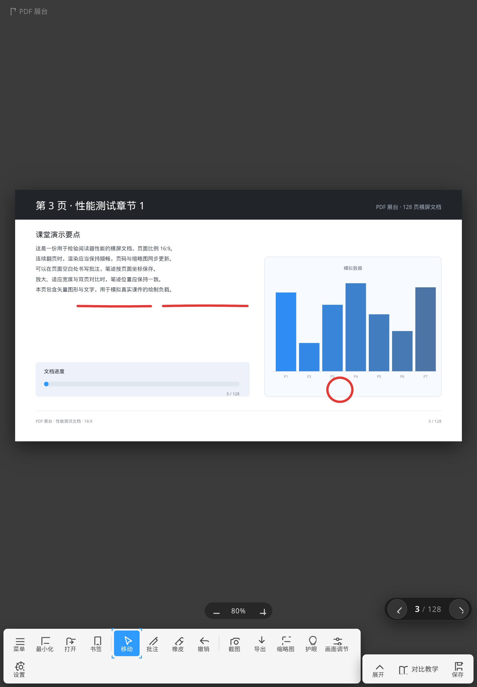

把视频展台的手感
搬进 PDF
横竖屏都完整显示，图标不再被裁切；批注可以画到页面外的空白处；橡皮擦到哪，就擦到哪。128 页横屏文档照样秒开、跟手翻页。

课堂上真正用得上的细节
不是把网页塞进壳里，而是按展台的操作习惯重做了翻页、批注与擦除。
横竖屏都不裁切
平板竖屏时工具条自动换行，图标完整显示；翻页器与缩放条随工具条高度动态让位，不再互相压住。
批注可以画到页面外
输入层覆盖整个窗格，笔迹能落在页边空白处；笔画按 PDF 坐标保存，缩放后位置依旧准确。
橡皮图标所过即擦
按住后出现圆形橡皮，擦除位置就是图标中心；命中的笔画被分段裁掉，而不是整条消失。
右滑清空全部批注
点橡皮后，按钮上方出现「向右滑动擦除所有批注」，滑到底即清空，可撤销恢复。
双页对比教学
左右分栏显示相邻两页，各自独立批注、同步翻页；例题与解答同屏对照。
128 页也不卡
缩略图按可视区懒加载，翻页只渲染当前页；实测连续翻 10 页约 200ms。
导出带批注的 PDF
把整份文档按页渲染，批注烧录进新 PDF；也可以只截图当前页发给学生。
护眼与画面调节
亮度、对比度、饱和度三档滑杆，加暖色护眼；只影响显示，不改变导出内容。
书签与自动恢复
书签、批注与阅读位置保存在本地；意外关闭再打开，仍回到原来的页面。
页面之外，也能写
讲解时常常需要在页边补充说明。批注层不再限制在页面矩形内，整个窗格都能落笔。
- 笔迹以 PDF 原始坐标存储，缩放、适应宽度、双页对比都不会错位
- 五种笔色、三档粗细，切换即时生效
- 每一笔都可撤销，也可以一键清除当前页

擦到哪，就擦到哪
按下橡皮后出现一个红色圆形图标，触屏时自动上移 46px，不会被手指挡住。擦除发生在图标中心，长笔画会被分成两段，缺口正好在图标经过的位置。
- 分段裁剪，保留笔画其余部分，不会整条误删
- 滑动条悬浮在橡皮按钮上方，右滑到底清空全部批注
- 清空与擦除都进入撤销栈，误操作可回退
左右对照，一页不丢
开启对比教学后自动左右分栏，左右两页可以分别批注。缩略图面板按需渲染，128 页也只需加载可视区域。
- 示例与答案、原文与译文同屏对照
- 缩略图懒加载，打开 128 页文档约 1.2 秒
- 竖屏自动改为上下排列，不再挤压

真实界面，没有渲染图
以下均来自 4K 屏幕截图，点击可查看原图。
 128 页横屏测试文档批注橡皮与右滑清空双页对比
128 页横屏测试文档批注橡皮与右滑清空双页对比 缩略图
缩略图
竖屏不裁切30 秒看完 PDF 展台
3840×2160、60 帧逐帧渲染，画面里的每一个界面都是软件真实截图，不是渲染图。
选择你的平台
Windows 提供安装程序（推荐，带桌面/开始菜单快捷方式与卸载项）与免安装绿色版；macOS、Linux 为便携包；Android 为 arm64 + x86 通用安装包。文件托管在 GitHub Releases。
Program Files，自动创建桌面与开始菜单快捷方式；覆盖安装会先静默卸载旧版。xattr -cr "/Applications/PDF 展台.app"。启动.sh；个别发行版若提示沙箱错误，可加 --no-sandbox。